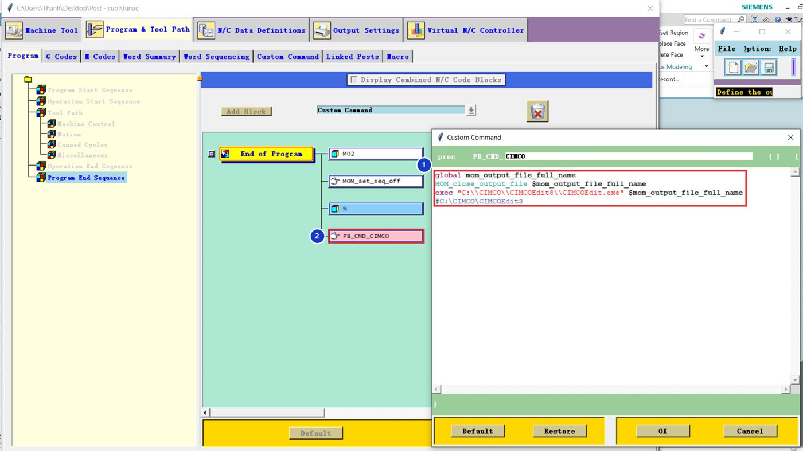

Video hướng dẫn
Video làm theo cách sửa trực tiếp file .tcl. Bài dưới đây là cách làm trong giao diện Post Builder, cho kết quả tương tự.
Tải về: code dán vào Post Builder.
01Tạo lệnh
Tạo lệnh CIMCO
Program & Tool Path → Custom Command → Create, tên CIMCO, dán code 1. Sửa đường dẫn nếu CIMCO cài ở thư mục khác (giữ hai dấu \\).
global mom_output_file_full_name
MOM_close_output_file $mom_output_file_full_name
exec "C:\\CIMCO\\CIMCOEdit8\\CIMCOEdit.exe" $mom_output_file_full_name02
Đặt cuối Program End Sequence
Program → Program End Sequence → End of Program, kéo PB_CMD_CIMCO xuống cuối cùng, sau dấu % 2. Lệnh phải chạy sau khi mọi dòng NC đã được ghi.


Đường dẫn CIMCO
Mở thư mục cài CIMCO, tìm CIMCOEdit.exe, chuột phải → Copy as path. Trong code, mỗi dấu \ phải viết thành \\.